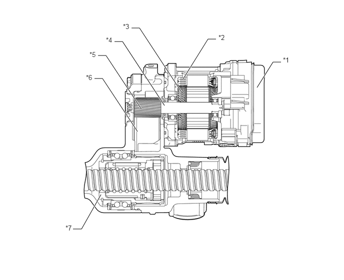

5.354,1.823 5.688,1.292
5.688,1.292 5.854,1.292
true
3.813,1.646 4.333,0.813
4.333,0.813 4.5,0.813
true
2.74,0.583 2.906,0.583
2.906,0.583 3.781,1.917
true
2.385,0.865 2.552,0.865
2.552,0.865 3.427,2.198
true
2.042,1.156 2.208,1.156
2.208,1.156 2.938,2.26
true
1.969,1.635 2.135,1.635
2.135,1.635 2.865,2.74
true
1.521,4.771 1.698,4.771
1.698,4.771 2.104,4.052
true
5.896,1.167 6.208,1.323
0.313,0.156
10
false
*1
4.552,0.698 4.865,0.854
0.313,0.156
10
false
*2
2.563,0.469 2.875,0.625
0.313,0.156
10
false
*3
2.208,0.75 2.521,0.906
0.313,0.156
10
false
*4
1.865,1.052 2.177,1.208
0.313,0.156
10
false
*5
1.792,1.531 2.104,1.688
0.313,0.156
10
false
*6
1.365,4.667 1.677,4.823
0.313,0.156
10
false
*7